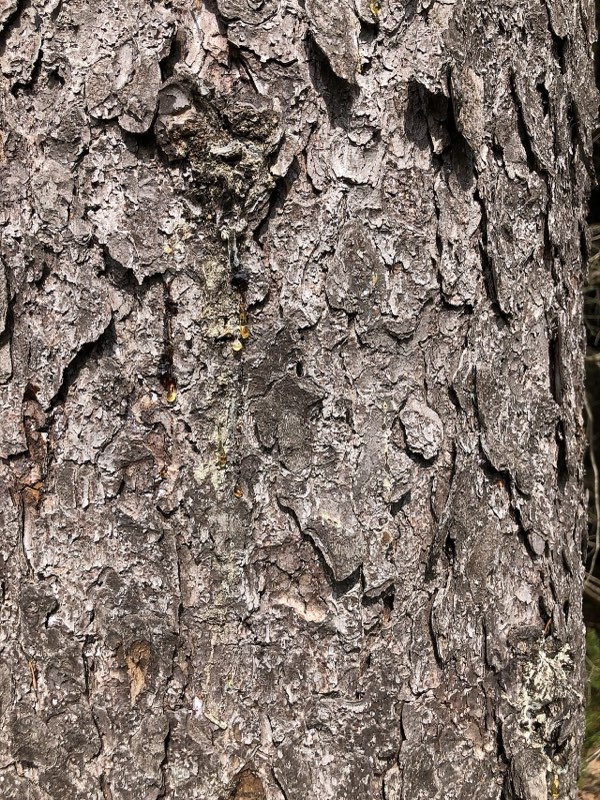
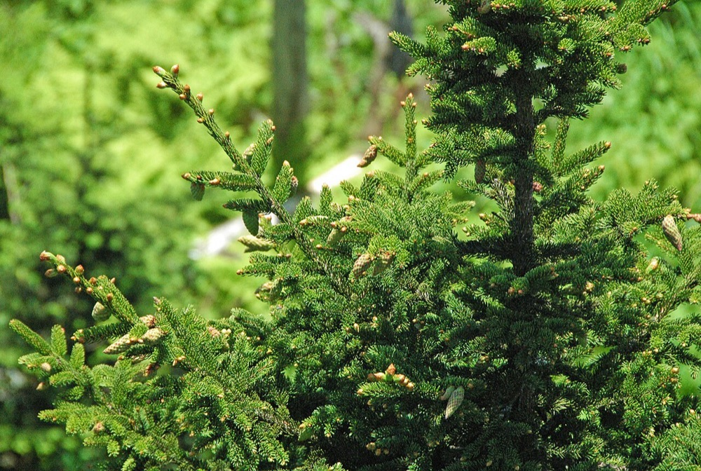
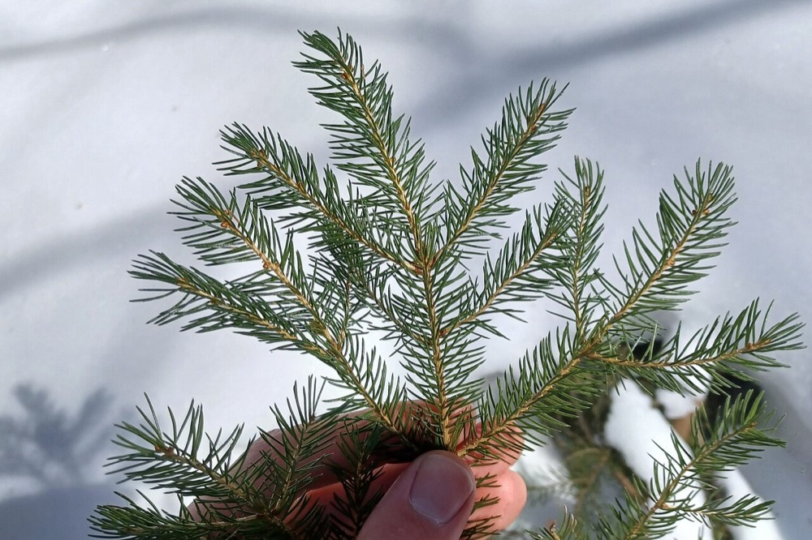

Red Spruce
Picea rubens
- Kind
- tree · Pinaceae
- Native to Vermont
- yes
- Legal status
- Native; no special legal status found (checked 2026-10-30)
- Look-alikes
- White spruce; Black spruce; Norway spruce; Blue spruce
Pictures



Names
Red spruce, Picea rubens. A main tree, with balsam fir, of high-elevation spruce-fir forest.
Range and habitat
Native. Upright and straight with a narrow crown, 60 to 80 feet tall and 1 to 2 feet in diameter (Virginia Tech). Montane spruce-fir forest begins around 2,500 feet in northern Vermont and about 2,800 feet in the south, with moss on the forest floor and abundant lichens (seedling guide). The Landowner's Guide ranks red and white spruce just below hemlock and cedar for deer winter cover.
How to identify (by season; look-alikes and the key difference)
- Needles: four-sided, sharply pointed, 1/2 to 5/8 inch, each on a raised woody peg (sterigma), shiny yellow-green, tending to curve upward.
- Twigs and buds: orangish-brown, finely hairy (a hand lens helps); orange-brown buds with loose scales.
- Cones: chestnut brown, egg-shaped, 1 to 1 1/2 inches.
- Bark: grayish brown on the surface, reddish brown beneath, in fine flaky patches.
- Look-alikes: white, black, Norway and blue spruce.
By growth stage (trees: seedling, sapling, pole-size, mature or old; what to look at in each)
| Stage | What to look at | What you see |
|---|---|---|
| Small seedling | cotyledons, size | A whorl of wispy cotyledons; very small, often under an inch, and dainty. With only cotyledons out, white pine seedlings look similar but are taller and sturdier. Often nestled into moss, on moist logs or on rocks; a moss mat can look like a grove of spruce seedlings (spruce does not form a mat). |
| Larger seedling | needles, direction | Wispy, pointed needles whose tips are sharp to the touch, all oriented toward the tip of the twig. |
| Sapling and pole-size | twig, buds | Orangish-brown, finely hairy twigs; orange-brown buds. |
| Mature and old trees | bark, crown | Grayish-brown surface bark over reddish brown with flaky patches; narrow crown. |
| Winter, any age | needles, twig | The needle and twig characters above. |
| Fruit (fall) | cones | Chestnut-brown ovoid cones. |
Through the year
Dates are typical for Vermont and shift with elevation and year; "approximate" means the source gave a season and the dates are a translation of it.
| When | What | Look for | What to do | Dates |
|---|---|---|---|---|
| Sep 15 to Nov 30 | seed-drop (identify) | Chestnut-brown egg-shaped cones 1 to 1 1/2 inches long shed their seed in fall; the cones tend to drop in their first winter. | - | approximate |
| Nov 1 to Mar 31 | dormant (identify) | Evergreen: shiny yellow-green, four-sided, sharply pointed needles 1/2 to 5/8 inch long on raised woody pegs, curving upward; orangish-brown finely hairy twigs and orange-brown buds. | - | approximate |
Signs on the land (tracks, scat, browse, nests, holes, calls)
Not described in the sources read.
Role in the forest (what it eats, what eats it, what it needs)
Birds, squirrels, chipmunks and other rodents eat its seeds and buds, and it gives cover for deer and moose (search summary of the factsheet). A search summary also says red spruce has declined across much of its range, linked to severely cold winters and possibly air pollution, and that spruce budworm stunts and deforms it.
What helps it thrive (light, soil, shelter, food and the trees it uses)
- Light: tolerant of shade; seedlings can establish in light as low as 10 percent of full sunlight but at least 50 percent is needed for optimum growth. Red spruce responds to canopy removal even after many years of suppression, and regeneration after a harvest depends entirely on advance reproduction (FEIS).
- Soil and climate: acid soils (pH 4.0 to 5.5), the most productive from unsorted glacial drift and till; cool, moist summers and cold winters with 36 to 52 inches of precipitation, often more in mountains with fog drip; in the northern part of its range from sea level to about 4,500 feet.
- Seedbed: seeds germinate in almost any medium except sod, and establishment is usually best on shallow, less fertile soils that discourage competing hardwoods; the primary roots of seedlings do not penetrate litter and duff to any depth.
- Wildlife: spruce grouse browse the leaves and twigs and use red spruce for thermal and loafing cover in winter; red spruce is unpalatable to deer.
Managing for it (habitat practices) and living with it (conflicts and damage)
In deer-yard management, spruce is kept when converting an even-aged stand because it lives longer, is more wind-firm and resists spruce budworm better than fir (White-tailed Deer).
Legal status
No special status found.
Sources
- Virginia Tech Dendrology, Red spruce: https://dendro.cnre.vt.edu/dendrology/syllabus/factsheet.cfm?ID=137 (read 2026-10-30)
- J. Robertson and J. Truong, A Guide to the Seedlings of New England (FEMC, 2021): https://www.uvm.edu/femc/attachments/project/999/seedling_guide-compressed_1.pdf
- USDA Forest Service, Fire Effects Information System, Picea rubens: https://www.fs.usda.gov/database/feis/plants/tree/picrub/all.html (read through a summarizing fetch 2026-11-01)
What this page is based on
Kind of source: mixed (Virginia Tech factsheet; New England seedling guide; a search summary of the factsheet for health)
What was read: Virginia Tech Dendrology factsheet (ID 137) for red spruce, read through a summarizing fetch on 2026-10-30, and the red spruce pages of A Guide to the Seedlings of New England (read as text; only the second page's characters could be read cleanly). The factsheet gives no habitat and does not separate young from old bark. The decline note is from a search summary of the factsheet. Calendar windows translate 'in fall' and 'winter'. Habitat needs (light, soil, regeneration, response to cutting) added 2026-11-01 from the USDA Forest Service Fire Effects Information System species review (summarizing fetch); the review is national in scope and the Northeast details are those it names.
Last checked: 2026-10-30
Vermont land and forest reference, built 2026-11-01. Rules and dates here are summaries, not legal advice; dates shift with elevation and year. Photo and recording credits · Note: _reference/US-VT/Species/Red Spruce.md